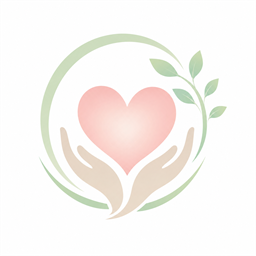
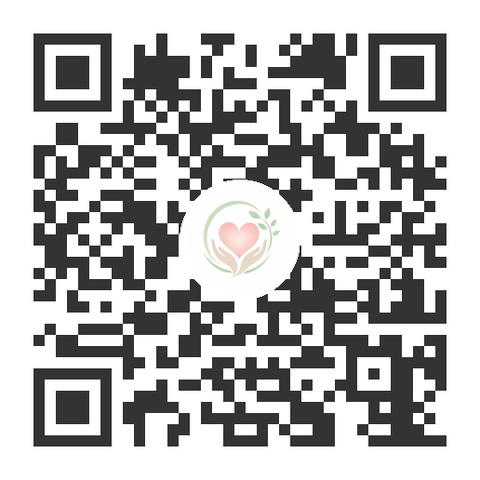

心の健康教室 水巻相談支援事業所相談支援☎ 080-9193-8330見たもの、聞いたものが、どうやって気分になるのか。その道すじを知ると、自分の心に何が起きているのかが見えてきます。
外から入ってくる
できごと・ことば
見る・聞く・かぐ
味わう・触れる
思考と知識のあいだで
情報を処理する
記憶（本能・理性）を
よりどころに決める
良い気分か、
悪い気分かが生まれる
この流れ、ぜんぶが「心」です。
出来事は同じでも、受け取り方で気分は変わります。下のスイッチを切り替えて、このページの世界がどう変わるか、確かめてみてください。
朝、雨が降っていた。
あなたの受け取り方どちらかを選んでみてください。
あたりまえ思考が出てきても大丈夫。気づけたことが、最初の一歩です。
気づくことを続ければ、気分は少しずつ選べるようになっていきます。
心の健康教室で行っている内容を、ここで少しだけ体験できます。正解・不正解はありません。えらんでみると、自分の心のうごきに気づけます。気になるものから、どうぞ。
心の流れのいちばん最初にあるのが五感です。教室では、ここから練習を始めます。動画で少しだけ体験できます。
心の健康教室は、一般の方も、障がいをお持ちの方も、小学生以上であればどなたでもご参加いただけます。
体験料金については水巻相談支援事業所の名刺をお渡しいただけましたら無料となります。
受付：火・水・金・土・日 9:30〜18:30
〒807-0001 福岡県遠賀郡水巻町猪熊4-8-31-10
指導：ハートマップカウンセラー（相談支援専門員・精神科看護師）

Instagram